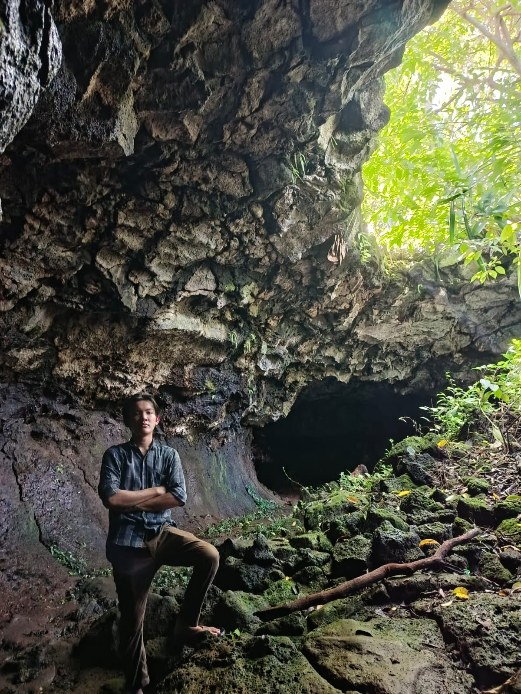
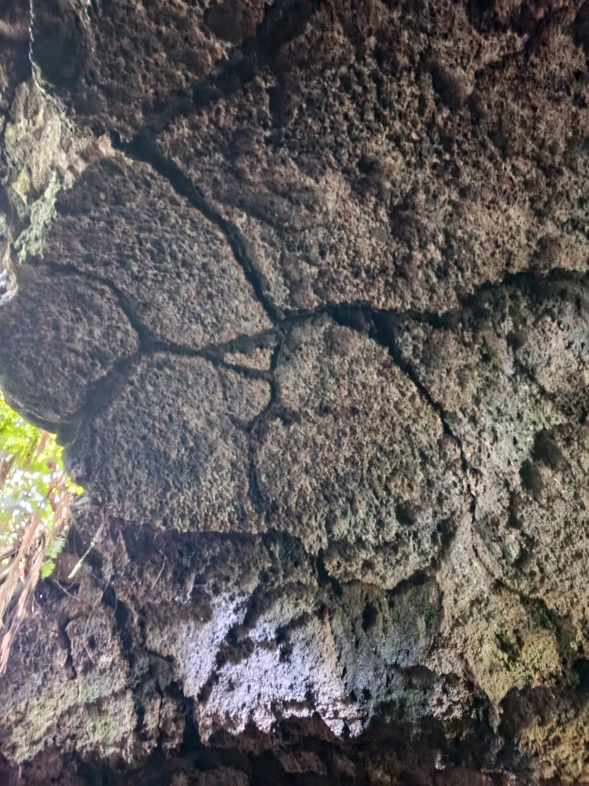
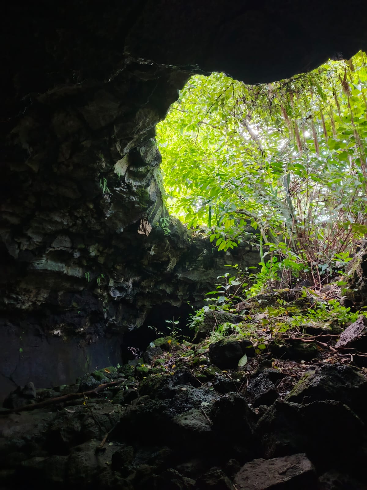
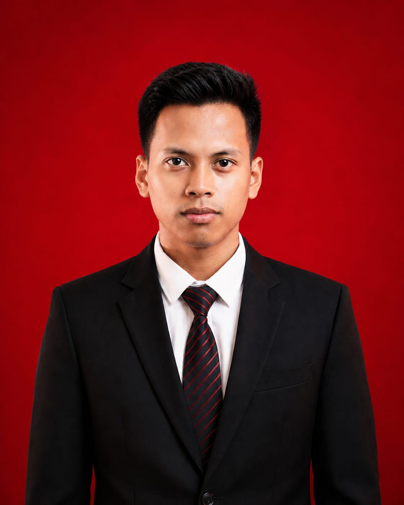
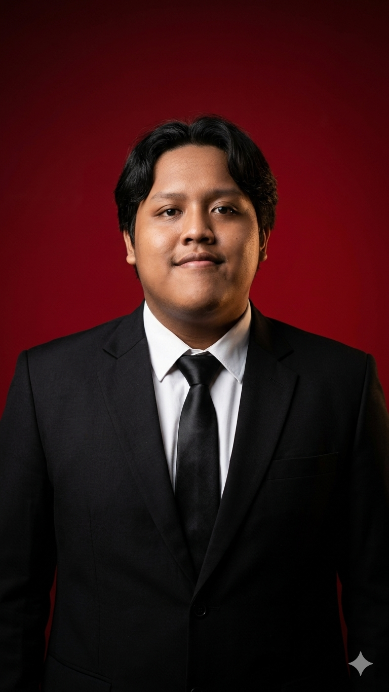
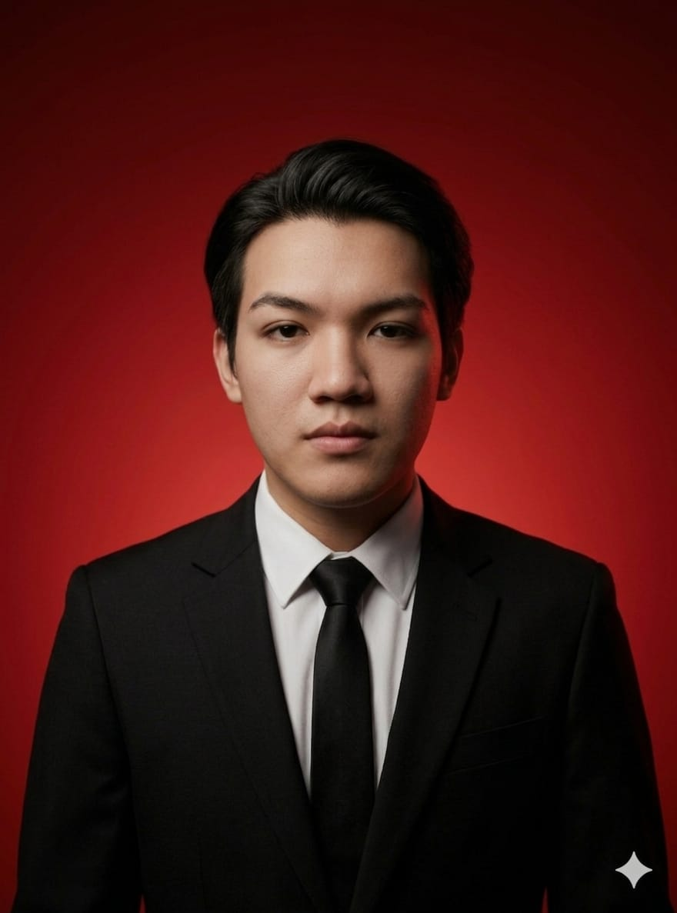

Eksplorasi 3D Gua Pandan
Jelajahi misteri lorong lava Gua Pandan tanpa harus beranjak dari tempat Anda. Lewat visualisasi 3D interaktif, singkap rahasia batuan vulkanik purba dan rasakan pengalaman imersif keajaiban geologi Lampung Timur.
Latar Belakang Geologi
Memahami proses alamiah yang membentuk mahakarya bawah tanah.
Gua Pandan yang berlokasi di Lampung Timur adalah salah satu fenomena geologi yang eksklusif dan memukau. Berbeda dengan mayoritas sistem gua di Indonesia yang terbentuk dari pelarutan batu gamping (karst), Gua Pandan merupakan lorong lava (lava tube). Gua ini terbentuk dari proses pendinginan aliran magma vulkanik pada masa lampau.
Berdasarkan berbagai studi geologi, litologi utama penyusun dinding dan lorong Gua Pandan adalah basalt vesikular. Batuan magmatik ini terbentuk ketika lava basaltik dengan viskositas rendah mendingin dengan sangat cepat, lalu memerangkap gas-gas vulkanik sehingga menciptakan struktur batuan berongga (vesikel). Gua ini menjadi laboratorium alam yang luar biasa untuk mempelajari jejak vulkanisme purba.

Fitur Geologi Utama
Anatomi gua dan formasi batuan penyusun ekosistem vulkanik eksotis ini.
Lorong Lava
Terbentuk saat aliran lava permukaan membeku menjadi kerak keras, sementara magma cair di dalamnya tetap mengalir meninggalkan rongga terowongan.
Basalt Vesikular
Batuan penyusun utama bertekstur unik, dipenuhi oleh rongga-rongga kecil akibat gelembung gas yang terperangkap saat pendinginan drastis.
Lavacicle
Bentukan langka menyerupai stalaktit yang terbentuk dari sisa lelehan lava yang menetes perlahan dari langit-langit gua lalu membeku seketika.
Flow Marks
Jejak-jejak aliran seperti guratan atau gelombang pada dinding yang merekam arah dan dinamika kecepatan lava di masa purba.
Sejarah Pembentukan
Kronologi singkat bagaimana Lorong Lava Gua Pandan tercipta.
1. Erupsi Vulkanik
Gunung api purba memuntahkan lava basaltik yang memiliki viskositas (kekentalan) sangat rendah, sehingga mampu mengalir cepat ke area dataran.
2. Pendinginan Permukaan
Udara dingin di atmosfer menyebabkan bagian terluar (permukaan) dari aliran lava membeku lebih dahulu, membentuk kerak atau cangkang keras pelindung.
3. Aliran Sub-permukaan
Terisolasi dari suhu luar, magma pijar di bawah kerak yang sudah membeku ini tetap panas dan terus mengalir maju membelah jalur di dalamnya.
4. Terbentuknya Gua
Saat pasokan lava dari pusat letusan berhenti, sisa magma mengalir habis keluar meningalkan terowongan kosong yang kini kita kenal sebagai Gua Pandan.
Galeri Penjelajahan
Dokumentasi keindahan struktur vulkanik dan penelusuran Gua Pandan.



Lokasi Geosite
Kunjungi secara langsung dan saksikan keajaiban alam ini secara nyata.
Informasi Akses
Alamat:
Kecamatan Sukadana, Kabupaten Lampung Timur, Provinsi Lampung, Indonesia.
Aksesibilitas:
Berjarak sekitar 2-3 jam perjalanan darat dari Kota Bandar Lampung. Dapat diakses menggunakan kendaraan roda dua maupun roda empat hingga area parkir.
Perhatian:
Pastikan membawa alat penerangan memadai, helm safety, dan sepatu tracking karena lantai gua berbatu dan licin.
Profil Pengembang
Mengenal tim kreator di balik visualisasi interaktif ini.

Ignatius Canapolo Sinaga
Teknik Geologi, ITERA
Membangun platform edukasi ini sebagai sarana konservasi digital geoheritage Gua Pandan, agar keajaiban geologi ini dapat diakses secara global.

Gilang Radityo
Teknik Geologi, ITERA
Berperan dalam akuisisi data lapangan. Fokus pada pemodelan 3D dan virtual tour agar masyarakat dapat memahami kekayaan alam tanpa merusak situs aslinya.

Rafi Barus
Teknik Geologi, ITERA
Bertanggung jawab pada analisis data geologi dan penyusunan konten edukasi. Berdedikasi untuk memasyarakatkan ilmu kebumian melalui media visual interaktif.
Lestarikan Warisan Bumi
Gua Pandan bukan sekadar lubang gelap di bawah tanah. Ia adalah kapsul waktu geologi, bukti dinamika vulkanik Sumatera di masa lampau yang perlu kita jaga untuk edukasi dan sains masa depan.